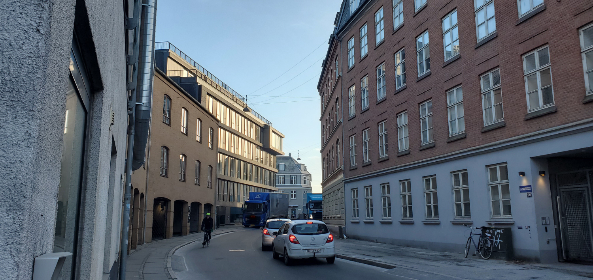
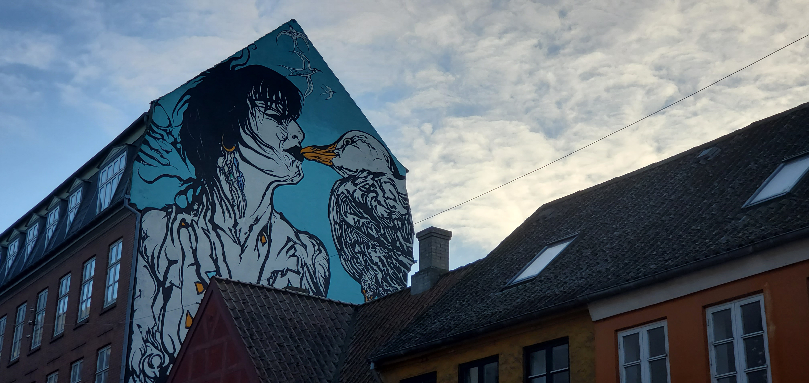
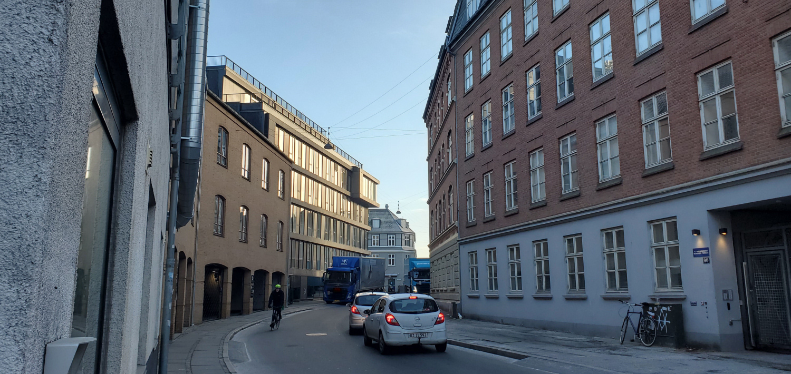
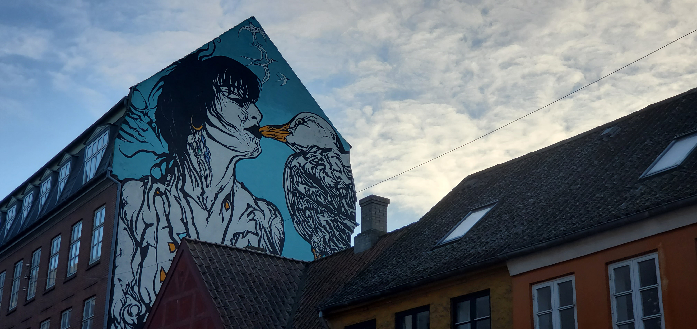

The Seagull Kiss
Strange and endearing
What?
“Mågekysset”, in English “The Seagull Kiss”, is the mural that can be found on the west side of building 90 on street Fiskergade, in Aarhus.
Originally painted in 1985 and restored in 2013 it is still a vibrant piece standing out on the plain street.
Why?
The original painting was a cover for the LP “ALBATROS” in 1982. It was inspired by a picture taken during a photoshoot in the artist’s workshop. The woman portrayed in the painting is Kate Svanholm, the lead singer of the punk band Lost kids, the picture was of her kissing the beak of a stuffed seagull.
Who?
The man behind the mural, Hans Krull is a graphic artist, painter and sculptor. He studied graphic art at the Academy of Arts in Krakow, Poland, between 1974 - 1977.
The artist says the piece symbolizes the longing of “the widows with living husbands”, “a tribute to sailors’ wives”.
Besides “The Seagull Kiss” he has also contributed to the Aarhus art scene with Café UnderMasken.
When and where?
Opening hours: 24/7
Address: Fiskergade 90, 8000 Aarhus
Transport access: Walking, autovehicle, micromobiles (eg: bike)
Gallery
 


